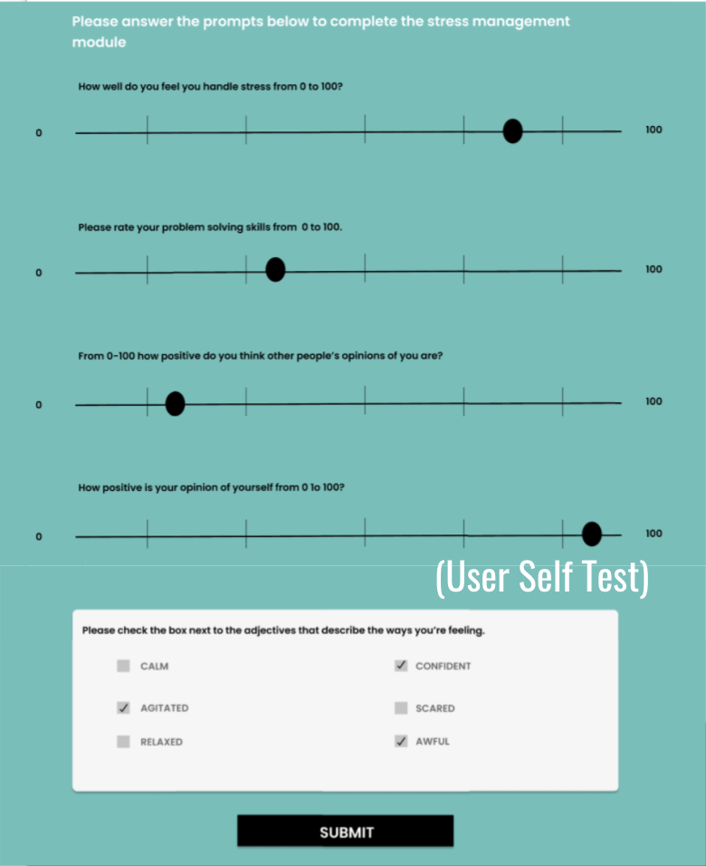
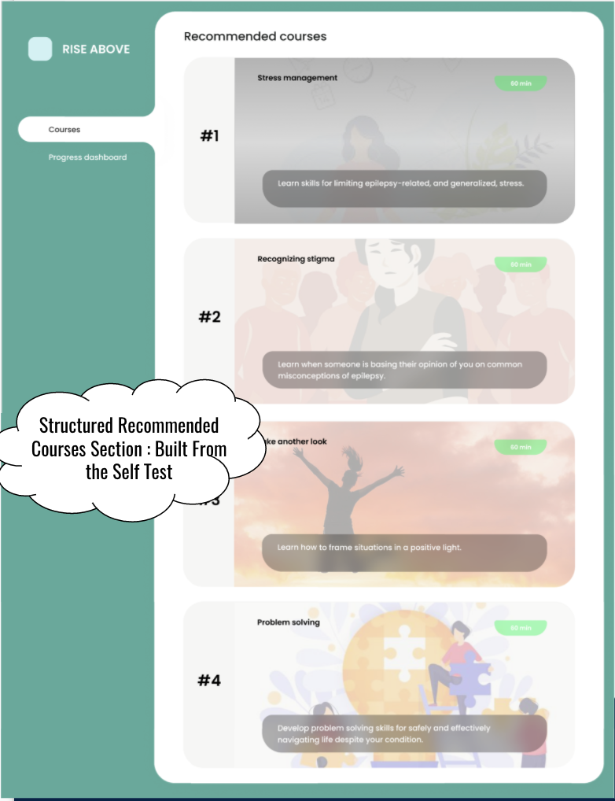
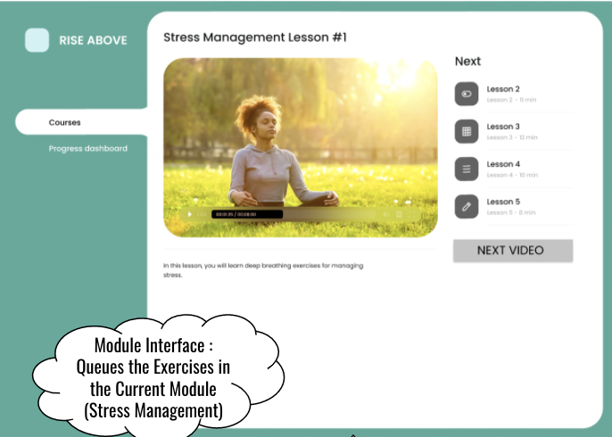
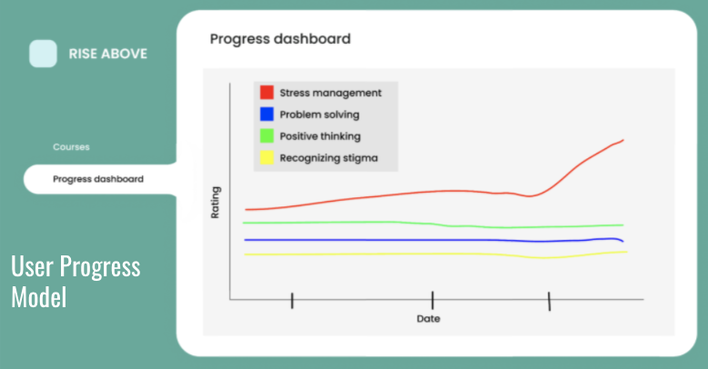

Representative screenshots



Instructions
Use the link below to access our prototype.
Prototype link
Press the play button in the top right corner (circled in red in the image below) to start interacting with the prototype.

From there, you will be able to run a mock interaction with the product.
Usability Problems
| Problem | How critical? | Planned solution |
| Scale of 100 was undesireable. Not aesthetically pleasing, too precise (P1, P2) | ||
| The link to go from the progress dashboard back to the courses page was not working (P1) | ||
| The 'next'/submit button on the ratings pages did not show up until questions were submitted (P1) | ||
| It was not made clear to the user why they were being signed up (P1) | ||
| The UI component for rating oneself was unintuitive aesthetically (P2) | ||
| Role of epilepsy was unclear (P2) |
Requirements
- (Data) Patients' information should be kept securely due to the sensitive nature.
- (Data) The patient must enter their rating of their feelings on a scale of negative to positive valence in regards to the topic of each module at the outset and end of that module.
- (Technical) The technology must be able to run in a web browser environment on mobile or desktop.
- (Functional) The website can track a patient's emotional progress as they accomplish subsequent sections of the web application.
- (Environment) The web application must be of soothing color, not too flashy or animated in order to avoid triggering seizures.